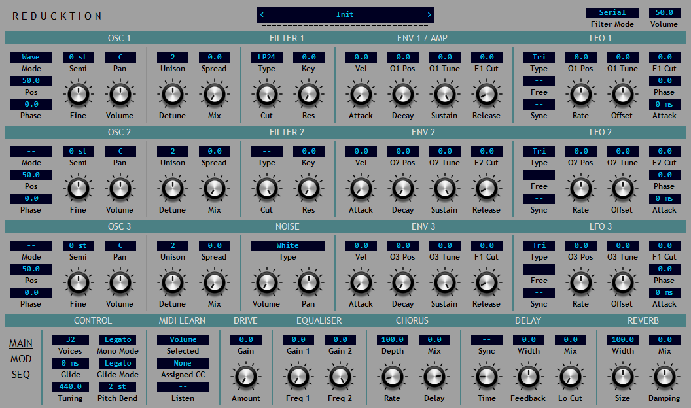
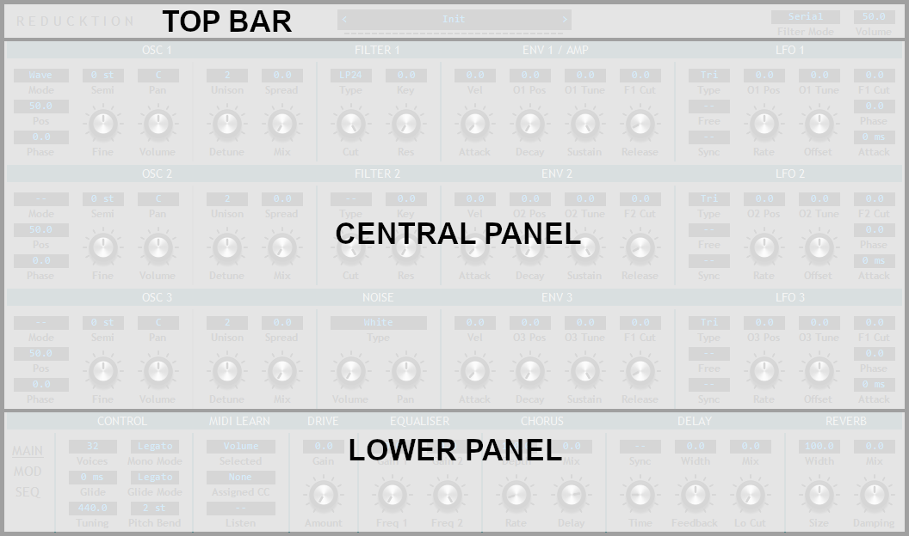
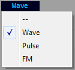
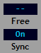
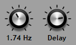
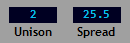

Overview¶
Reducktion is a 32-voice polyphonic software synthesizer for use in audio hosts that support the VST 2.4 plugin format. It available for Windows operating systems in both 32-bit and 64-bit versions.
This guide provides an overview of the functions and operation of the synthesizer.
Installation¶
Reducktion is provided in a simple zip-file package containing the following:
Reducktion.dll - the 64-bit version of the plugin
Reducktion_32.dll - the 32-bit version of the plugin
Reducktion_Data - a directory containing example presets and themes
To install simply copy the appropriate .dll file to a plugin directory recognised by your host.
Reducktion requires a ‘home’ folder to store various resources such as settings, presets and themes. By default this will be created automatically when the plugin is loaded for the first time. This will create the required folders in the following directory:
C:\Users\<username>\AppData\Local\Dead Duck Software\Reducktion
This allows resources to be shared by all instances of the plugin regardless of where they are installed on your computer. Note that Reducktion requires write-access permissions to these folders to save presets and settings so a shared home folder will be necessary if your plugins are located in restricted directories such as ‘Program Files’.
If you would prefer to keep the plugin resources and settings with the plugin itself it is possible to use a local home folder which is specific to a single instance of the plugin. This requires a folder named ‘Reducktion_Data’ in the same directory as the plugin. On startup Reducktion will look for this folder and if found will use it as the home location. As before make sure Reducktion has write-access to this folder to allow the saving of settings and presets.
Once the home folder has been created copy the content files into the Presets and Themes folders as appropriate.
For a quick and easy installation simply extract the contents of the zip package to a plugin folder that is write-accessible by your host.
User Interface¶
The Reducktion user interface consists of three sections: a top bar, a central panel and a multi-page lower panel.
The lower panel is a paged display; switch between the pages using the links on the left side of the panel. The currently selected page us underlined in the list.
The pages are:
MAIN - the main section presenting general synthesiser options and effects.
MOD - the modulation matrix.
SEQ - the sequencer.
These will be described in greater detail later in this guide.
Controls¶
Each of the user interface sections make use of various styles of control:
Menus - present multiple options of which one must be selected. Click the menu control to reveal the options and make a selection. Ctrl-click to restore its default value.
Switches - provide a choice between two options usually on or off.
Note: switches and menus use ‘- -’ to indicate ‘off’ or that no selection has been made.
Parameter knobs - control parameter values by mouse-dragging. This may occur in any direction: up/down, left/right or anywhere in between. Press shift while dragging to provide more accurate control. Ctrl-click or double-click to restore the default value.
While the value of the parameter is indicated at any time by the angular position of the knob, a more accurate readout will be displayed when the value is being changed. To view this without affecting the position of the knob right-click on the control.
Parameter displays - these function exactly the same as parameter knobs but occupy a smaller area and provide a permanent display value.
Many of the user interface sections feature context menus that provide additional functions. To access these click the title-bar of the relevant section. In most cases the menus provide access to clipboard operations allowing the section settings to be copied and a reset option to restore the section to its default values.